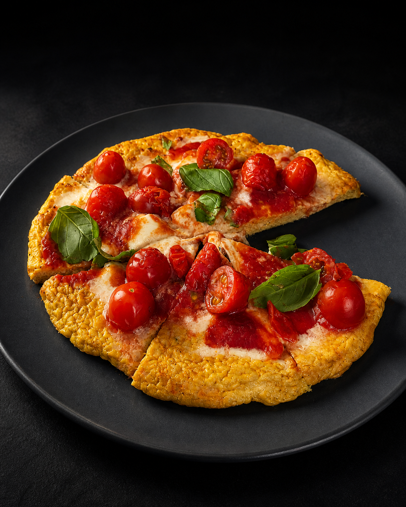

Pizza à base de poulet

Ingrédients
- 200 g de blanc de poulet
- 2 œufs
- Épices au choix
- Concentré de tomate
- 40 g de mozzarella
- Tomates cerises
- Garniture au choix selon tes envies
Préparation
- Mixer le blanc de poulet avec les 2 œufs et les épices.
- Étaler la préparation sur du papier cuisson pour former la pâte de la pizza.
- Enfourner à 180°C pendant environ 20 minutes.
- Sortir la base, ajouter le concentré de tomate puis la garniture (dans ma version : 40 g de mozzarella et des tomates cerises).
- Remettre au four 10 minutes.
Valeurs nutritionnelles (approx.)
Par portion : 515 kcal • 74 g protéines • 22 g lipides • 6 g glucides • 1 g fibres